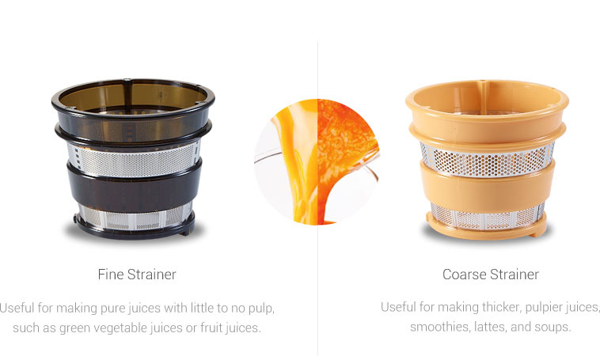
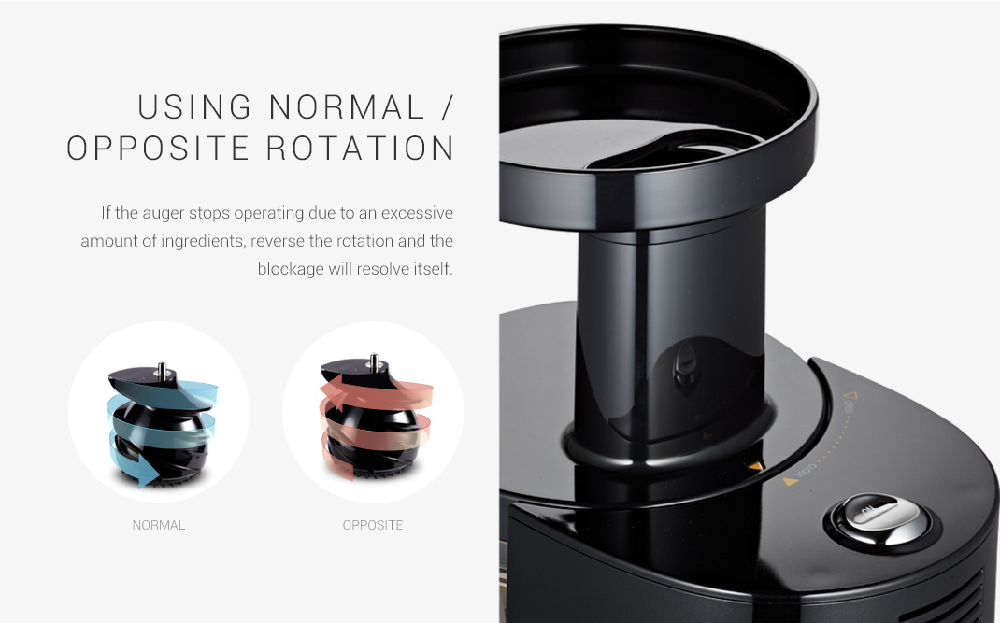
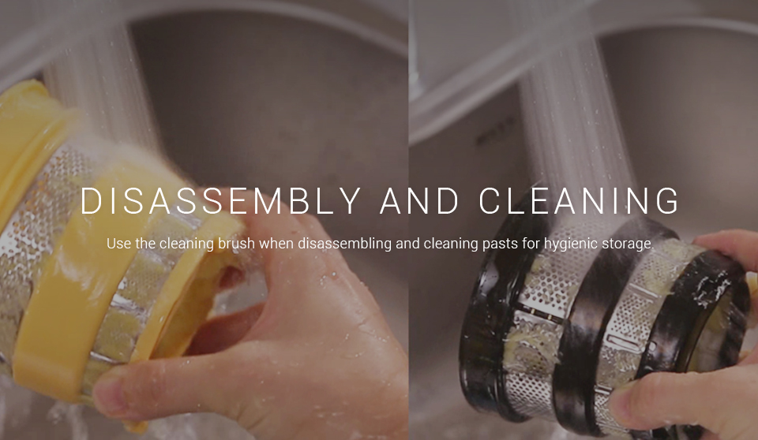
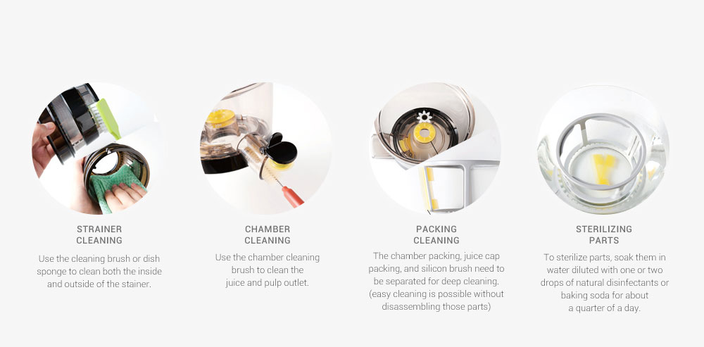

01
PRODUCT
HOW TO USE
HOW TO USE
CHOOSE THE STRAINER TYPE FOR
YOUR PERFECT JUICE
Hurom juicer comes with two strainers for all your needs: the fine strainer is good for pure juices with
little to no pulp, while the coarse strainer is good for thicker, pulpier juices, smoothies, lattes, and even soups.

- Fine Strainer
- Useful for making pure juices with little to no pulp, such as green vegetable juices or fruit juices.
- Coarse Strainer
- Useful for making thicker, pulpier juices, smoothies, lattes, and soups.

Using normal /Opposite rotation
If the auger stops operating due to an excessive amount of ingredients, reverse the rotation and the blockage will resolve itself.
NORMAL, OPPOSITE

Disassembly and cleaning
Use the cleaning brush when disassembling and cleaning pasts for hygienic storage.

- Strainer Cleaning
- Use the cleaning brush or dish sponge to clean both the inside and outside of the stainer.
- Chamber cleaning
- Use the chamber cleaning brush to clean the juice and pulp outlet.
- Packing cleaning
- The chamber packing, juice cap packing, and silicon brush need to be separated for deep cleaning. (easy cleaning is possible without disassembling those parts)
- sterilizing parts
- To sterilize parts, soak them in water diluted with one or two drops of natural disinfectants or baking soda for about a quarter of a day.